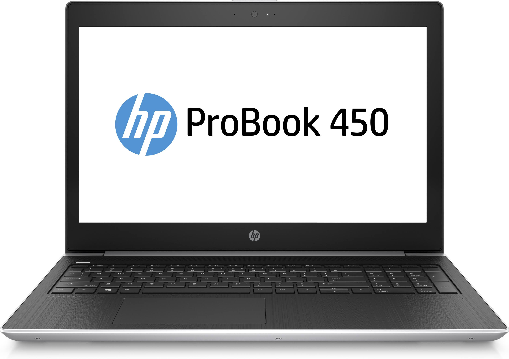
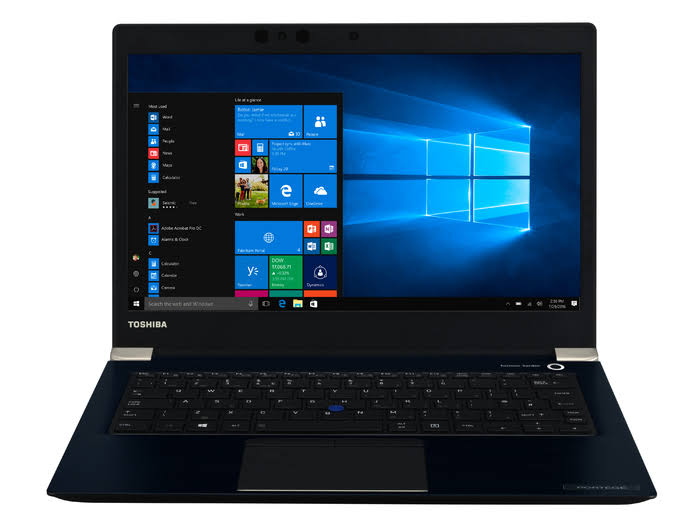
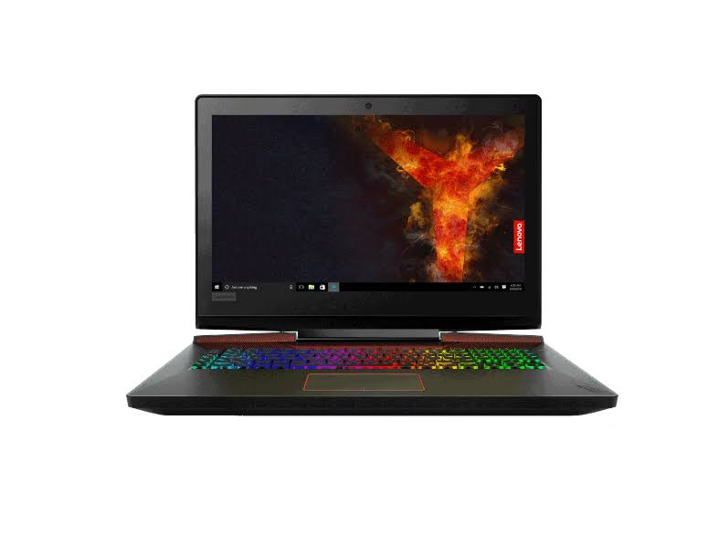
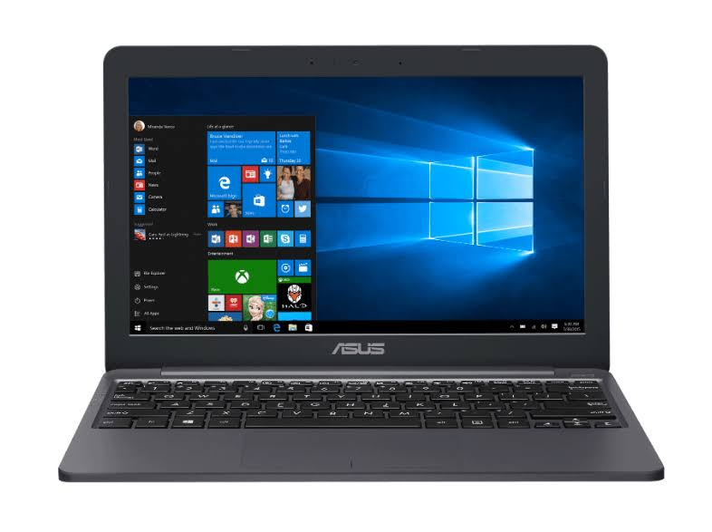
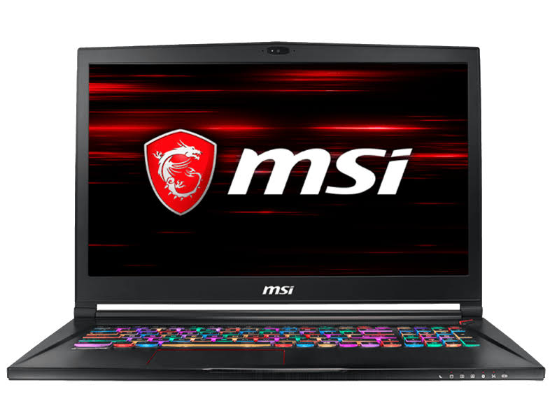
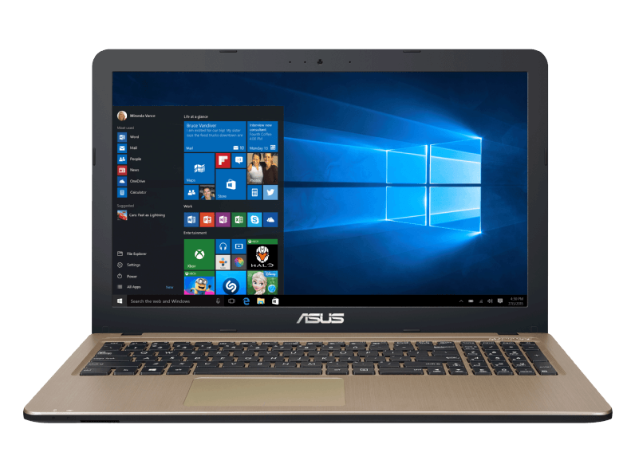
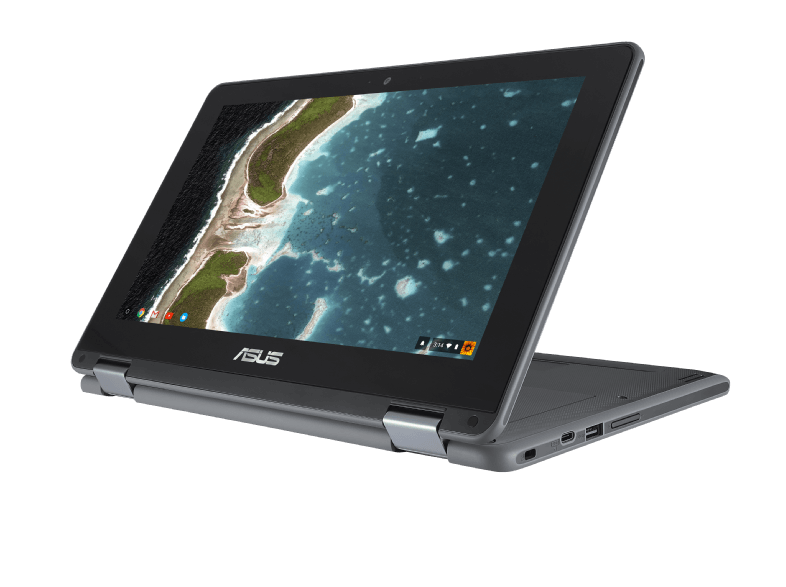
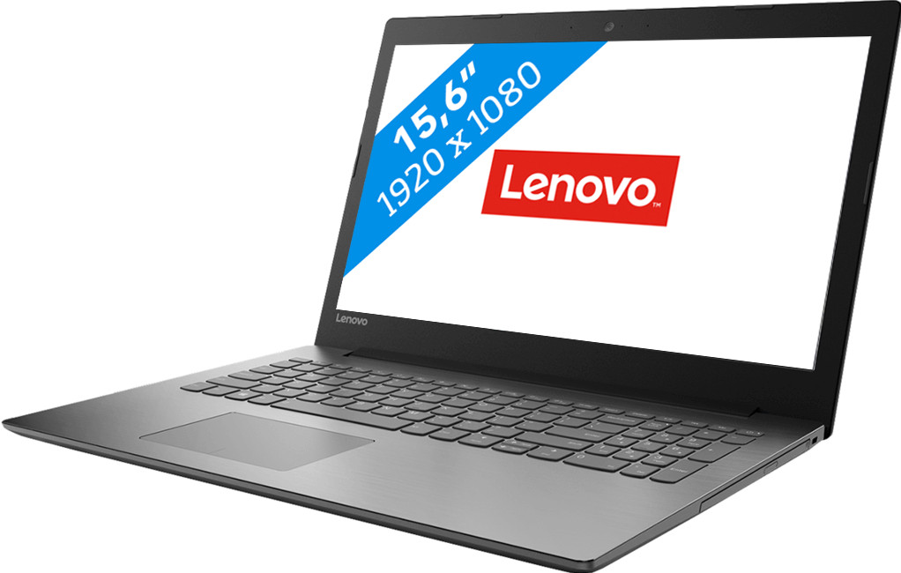
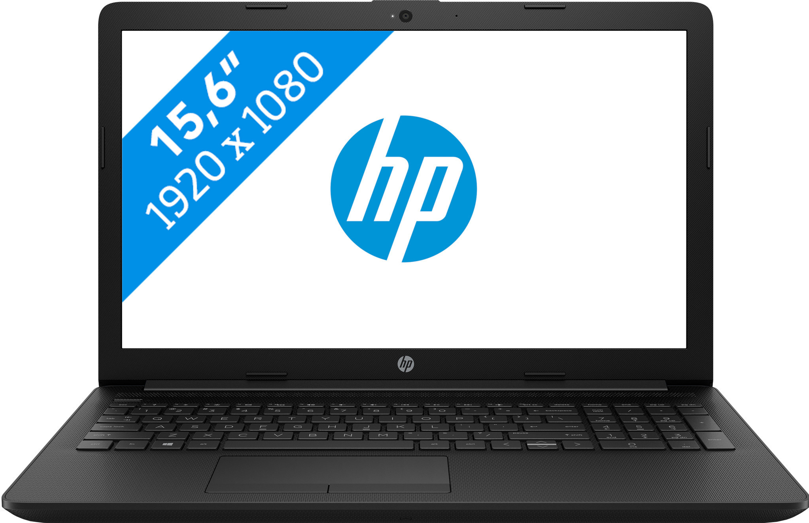

 HP laptop: ProBook 450 G5 15.6" i3 128GB 2.4GHz - Zilver kenmerken De volwaardige, dunne en lichte HP ProBook 450 helpt professionals op kantoor en onderweg productief te werken. Een stijlvol ontwerp, lineaire precisie, subtiele curves, optionele quad-core-prestaties en een lange batterijlevensduur maken deze ProBook onmisbaar voor moderne gebruikers.
€639 HP laptop: ProBook ProBook 450 G5 notebookcomputer - Zilver kenmerken De volwaardige, dunne en lichte HP ProBook 450 helpt professionals op kantoor en onderweg productief te werken. Een stijlvol ontwerp, lineaire precisie, subtiele curves, optionele quad-core-prestaties[2] en een lange batterijlevensduur maken deze ProBook onmisbaar voor moderne gebruikers.
€659 Speel al je favoriete games moeiteloos op de hoogste instellingen dankzij de SLI-configuratie. Speel dan je favoriete games in VR. Dankzij 2 PCIe SSD schijven, die sneller zijn dan gewone SSD's, ben je in een paar seconden klaar om aan je volgende avontuur te beginnen. Het toetsenbord van deze MSI is mechanisch, waardoor jouw aanslagen sneller geregistreerd worden dan bij een membraan toetsenbord. Zo reageer je nét iets sneller op de vijand die je van achteren besluipt.
€5.369 Met een Intel Celeron N3350-processor, 4 GB werkgeheugen en een Intel HD Graphics 500-videokaartis deze Chromebook geschikt voor werk, school of wanneer je thuis op het internet wilt surfen. Naast het soepele gebruik kun je ook uitgaan van snelle verbindingen. Dit model beschikt namelijk over de meest actuele 802.11ac wifi-standaard en Bluetooth 4.1. Dankzij het stevige ontwerp is dit model is ideaal om mee op pad te gaan.
€349 De combinatie van Intel Core i7-8750H processor en het DDR4 16GB geheugen zorgen voor een krachtige laptop. Door de 256GB SSD start de laptop razendsnel op en daarnaast biedt de 1TB voldoende ruimte voor de opslag van afbeeldingen, muziek en andere bestanden. De laptop is voorzien van VGA nVidia GTX 1060 6GB. Daardoor krijg je tijdens het gamen ook nog de beste details te zien zonder haperingen.
€1,999,00 Hij is hierdoor ideaal voor het schrijven van tekst, surfen op het internet of het bekijken van al jouw favoriete films of series. Jouw bestanden veilig en snel opslaan doe je op de 128 GB SSD opslagruimte.
€369 Het voordeel van een Chromebook is het Google Chrome OS-besturingssysteem. Hierdoor werk je altijd in de Cloud en ondervind je weinig problemen tijdens het multitasken. Met een Intel Celeron N3350-processor, 4 GB werkgeheugen en een Intel HD Graphics 500-videokaartis deze Chromebook geschikt voor werk, school of wanneer je thuis op het internet wilt surfen. Naast het soepele gebruik kun je ook uitgaan van snelle verbindingen.
€349 De Lenovo Ideapad 320-15IAP 80XR00CKMH is een 15,6 laptop die je thuis, op kantoor en op school gebruikt voor taken als tekstverwerken, je sheets bijwerken en films kijken. Ben je wat laat? Dan hoef je niet ook nog eens lang op het opstarten van je laptop te wachten, want de 128 GB SSD start de Ideapad in ongeveer 15 seconden op. Het numerieke toetsenbord is handig als je snel cijfers in Excel wilt verwerken. Thuis stream je muziek en geniet je van je favoriete series op het Full HD beeldscherm
€399 De HP 15-db0930nd is een 15,6 inch laptop waarmee je e-mails verstuurt, presentaties maakt of aan verslagen werkt. Dankzij de krachtige batterij werk je een hele werkdag door zonder je oplader aan te sluiten. Zo werk je onafgebroken door zonder naar een stopcontact te zoeken. HP Fast Charge zorgt dat de batterij na 1,5 uur volledig is opgeladen. Je programma's start je binnen enkele seconden op via de 256 GB SSD. Daarnaast is je laptop binnen 15 seconden opgestart. Je hoeft dus nooit lang te wachten voordat je aan de slag gaat
€449